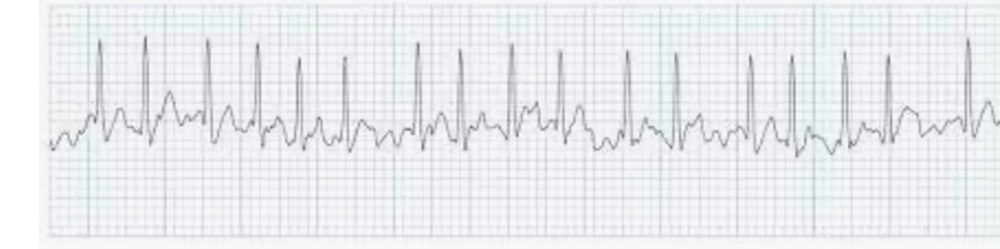
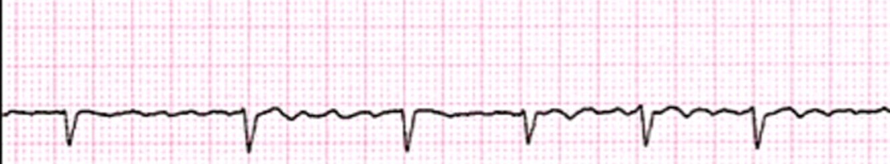
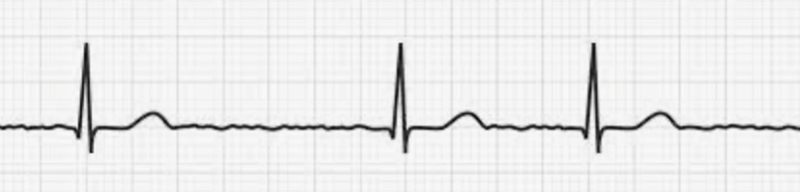

Ventricular Rate in Atrial Fibrillation
Atrial fibrillation is characterized by a random oscillating baseline and an irregular ventricular response. The typical ventricular rate is 150–180 bpm. However, moderate (90-120 bpm) and slow rates (40-90 bpm) can occur, particularly in the setting of conduction system disease or use of drugs like beta blockers or calcium channel blockers
Rapid
Moderate
Slow
